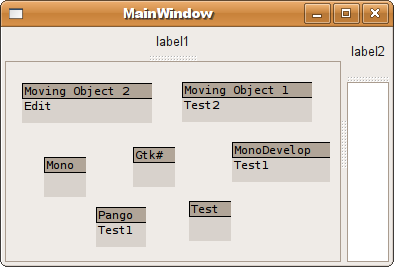

| ||||||||||
| ||||||||||
Desktop Development »
Static & Panel Controls »
Custom Controls
Intermediate License: The GNU General Public License (GPL)
Custom controls with MonoDevelop and GTK#By Olivier LecointreMovable controls with customized rendering on Linux with Mono. |
C# (C# 2.0, C#), .NET (.NET, .NET 2.0, Mono), Dev, Design Posted: 18 May 2008 Updated: 18 May 2008 Views: 11,162 Bookmarked: 14 times |
||
|
|
|||
- Web Developer at Mindex in United States
- BizTalk Developer at De Winter International Limited in New Zealand
- Sharepoint Developer at De Winter International Limited in New Zealand
- View Latest Jobs...
|
Advanced Search Sitemap |
|
|
|
||||||||||||||||

Introduction
Custom controls for Mono and GTK are usually done using basic Widgets. Sometimes, a custom rendering is preferred to achieve more advanced GUIs. This article presents a basic implementation of movable objects within a panel, with a popup menu to modify each object and their appearance.
Background
I recently made the switch to Ubuntu, and I am quite delighted with it. I develop mainly on .NET, and my dependence on some Windows tools was the sticky point that made me wait this long. This is now not really an issue, thanks to the great work of the Mono and MonoDevelop teams, and the related libraries like GTK#, Cairo, and Pango.
Mono brings the .NET platform to Linux, and MonoDevelop offers a good alternative to Visual Studio, making the development of GUI applications on the GTK desktop almost painless.
I wrote a cooperation tool that I use on a daily basis, and my first goal after the switch was to port it over with Mono and GTK#. After a few adjustments caused by the fundamental differences between Windows Forms and GTK#, I have to admit that the port of the application was a lot easier than I initially thought; I replaced the UI controls by widgets, set the various forms to use the GTK# layout, and that is pretty much it. The rest of the non-UI code worked as expected, with an overall good performance.
An area that gave me the most difficulty was the usage of custom controls with a behavior that is different from the base GTK components. This is the focus of this article.
Goals
- Visual representation of elements as a graph
- Each element has a title and some properties represented on the rendering
- Each element can be freely moved in the defined panel
- Each element has its own popup menu to change its properties
Solution
After spending some time with the GTK documentation, the Fixed and DrawingArea widgets seem to be the obvious choice. The Fixed
panel allows the placement of controls in absolute position. Although
it is usually not recommended for most of the forms, it does pretty
well in this case.
MVPanel is the inherited Fixed
container that contains the movable object. It can be dropped in any
form as a regular GTK widget. It contains the following methods:
AddMovingObject(string name,string caption, int x, int y)to add a new movable object.RefreshChildren()to force the controls to redraw.
MVObject is a basic implementation of the custom control that will be movable within the MVPanel. It inherits from DrawingArea.
It contains the following methods/properties:
ShowMenu()to present to the user the options on that particular control.Edit()to set the mode of the control in edit mode.Redraw()to force the control to redraw.
Captionto get a basic property of the control.
Rendering a custom control
The rendering of a DrawingArea widget has to be fully
specified. That is the drawback of being custom, but that is sometimes
what is needed. The libraries Cairo, for graphics, and Pango, for text,
seems to be recommended to render a consistent and contemporary look.
Pango is used in this sample but not Cairo, since the rendering is
quite simple.
The overridden method OnExposeEvent is where all the
rendering is done. Here, the area is painted with dark gray and light
gray, with some black lines to separate the two. Some text is also
added in each colored area.
using System;
using Gtk;
namespace GtkControl.Control
{
public class MVObject : Gtk.DrawingArea
{
public MVObject(string pName, string cap)
{
...
}
public void Redraw()
{
this.QueueDraw();
}
private Pango.Layout GetLayout(string text)
{
Pango.Layout layout = new Pango.Layout(this.PangoContext);
layout.FontDescription = Pango.FontDescription.FromString("monospace 8");
layout.SetMarkup("<span color=\"black\">" + text + "</span>");
return layout;
}
protected override bool OnExposeEvent (Gdk.EventExpose args)
{
Gdk.Window win = args.Window;
Gdk.Rectangle area = args.Area;
win.DrawRectangle(Style.DarkGC(StateType.Normal), true, area);
win.DrawRectangle(Style.MidGC(StateType.Normal),true,0,15,1000,1000);
win.DrawRectangle(Style.BlackGC,false,area);
win.DrawLine(Style.BlackGC,0,15,1000,15);
win.DrawLayout(Style.BlackGC,2,2,titleLayout);
if (!string.IsNullOrEmpty(body))
{
win.DrawLayout(Style.BlackGC,2,17,GetLayout(body));
}
return true;
}
}
}
The QueueDraw method is a call to GTK to indicate that the control has to be redrawn.
Moving a control
A control cannot be moved, by default. But, the Fixed
widget allows to put or move a control at a specified position. Also,
the control needs to respond to the click of the mouse, the drag, and
the release of the button.
using System;
using Gtk;
namespace GtkControl.Control
{
public partial class MVPanel : Gtk.Bin
{
private Widget currCtrl = null;
private Widget currClone = null;
private int origX = 0;
private int origY = 0;
private int pointX = 0;
private int pointY = 0;
...
//Mouse click on the controls of the panel
protected void OnButtonPressed(object sender, ButtonPressEventArgs a)
{
//Save the origin of the move in origX and origY
currCtrl = sender as Widget;
currCtrl.TranslateCoordinates(this.fixed1,0,0,out origX, out origY);
//Save the pointer position relative the origin of the move
fixed1.GetPointer(out pointX,out pointY);
}
protected void OnButtonReleased(object sender, ButtonReleaseEventArgs a)
{
//Final destination of the control
MoveControl(currCtrl, a.Event.X,a.Event.Y,false);
currCtrl = null;
if (currClone!=null)
{
this.fixed1.Remove(currClone);
currClone.Destroy();
currClone = null;
}
}
//Called whenever a control is moved
protected virtual void OnFixed1MotionNotifyEvent (object o,
Gtk.MotionNotifyEventArgs args)
{
//Rendering of a clone at the desired location
if (currCtrl!=null)
{
MoveClone(ref currClone, args.Event.X,args.Event.Y);
}
}
}
}
TranslateCoordinates is a GTK method, and gives back the relative position of a control in a container, here fixed1.
GetPointer is also a GTK method, and gives back the position of the cursor relative to a control.
The method MoveControl calls the fixed1.Move
method and makes sure that the control stays within the panel. It also
takes care of redrawing the control after it has been moved.
The method MoveClone calls MoveControl
on a clone of the selected widget. This ensures that the user sees the
control in both places (origin and destination). The clone is generated
when the button is pressed, and follows the mouse movement until the
button is released. The event MotionNotifyEvent can be dropped if the intermediate state is not desired.
A DrawingArea object does rendering, but doesn't respond to events. That is why the MVObject is embedded in an EventBox where all the mouse events are controlled. This is done in the GetMovingBox method:
//Create the event box for the custom control
private EventBox GetMovingBox(string name, string caption)
{
MVObject ctrl = new MVObject(name,caption);
EventBox rev = new EventBox();
rev.Name = name;
rev.Add(ctrl);
Console.WriteLine("Creating new moving object"+rev.Name);
return rev;
}
Using the MVPanel
The public method AddMovingObject(string name,string caption, int x, int y) is how an object is added to the panel, with the caption being the title, and the name the identification of the object.
//Add a movable control to the panel
public void AddMovingObject(string name,string caption, int x, int y)
{
//Prevent the object to be displayed outside the panel
if (x<0)
{
x = 0;
}
if (y<0)
{
y = 0;
}
//Create the box where the custom object is rendered
EventBox ev = GetMovingBox(name,caption);
//Add the events to control the movement of the box
ev.ButtonPressEvent+=new ButtonPressEventHandler(OnButtonPressed);
ev.ButtonReleaseEvent+=new ButtonReleaseEventHandler(OnButtonReleased);
//Add the control to the panel
this.fixed1.Put(ev,x,y);
this.ShowAll();
}
For the above screenshot, that translates to:
this.mvpanel1.AddMovingObject("mv1","Moving Object 1",10,10);
this.mvpanel1.AddMovingObject("mv2","Moving Object 2",10,55);
this.mvpanel1.AddMovingObject("mv3","Mono",10,100);
this.mvpanel1.AddMovingObject("mv4","Gtk#",10,145);
this.mvpanel1.AddMovingObject("mv5","MonoDevelop",10,190);
this.mvpanel1.AddMovingObject("mv6","Pango",10,235);
this.mvpanel1.AddMovingObject("mv7","Test",10,280);
Showing a context menu on the control
The final piece of the sample, the context menu for the control.
The MVObject implements a public method ShowMenu that simply calls the Popup method of a predefined Gtk.Menu on the control.
Gtk.Menu popup = new Gtk.Menu();
Gtk.MenuItem text1 = new MenuItem("Test1");
text1.Activated+=new EventHandler(Menu1Clicked);
Gtk.MenuItem text2 = new MenuItem("Test2");
text2.Activated+=new EventHandler(Menu2Clicked);
Menu1Clicked changes the body property on the control and forces a redrawing. This alters its appearance through the OnExposedEvent method.
protected void Menu1Clicked(object sender, EventArgs args)
{
body = "Test1";
this.QueueDraw();
}
The call to the menu is defined by the mouse right click in MVPanel.OnButtonPress:
//Mouse click on the controls of the panel
protected void OnButtonPressed(object sender, ButtonPressEventArgs a)
{
//Right click
if (a.Event.Button==3)
{
if (sender is EventBox)
{
((sender as EventBox).Child as MVObject).ShowMenu();
}
}
//Left click
else if (a.Event.Button==1)
{
//Double-click
if (a.Event.Type==Gdk.EventType.TwoButtonPress)
{
if (sender is EventBox)
{
//Calling the edit method of the control
((sender as EventBox).Child as MVObject).Edit();
}
}
else
{
//Setup the origin of the move
currCtrl = sender as Widget;
currCtrl.TranslateCoordinates(this.fixed1,0,0,out origX, out origY);
fixed1.GetPointer(out pointX,out pointY);
}
}
}
Points of interest
This implementation was easier than I thought it would be. Of course, this is not that useful in its current state, but gave me a good idea on the possibility of using GTK and Mono outside the regular widgets. I could well extend it as a small graphing framework for myself, but I am sure that it already exists as separate projects with a more robust design. However, this will definitely suit more than my needs, with a few additional adjustments.
I wanted to share this code as I didn't find a lot of existing documentation on custom rendering implementations, with complete code, on Mono.
There is, however, a lot of documentation on the base libraries, that I use as references:
| You must Sign In to use this message board. | |||||||||||||||||||||||||||||||||||||||||||
|
|||||||||||||||||||||||||||||||||||||||||||
|
|||||||||||||||||||||||||||||||||||||||||||
|
 General
General  News
News  Question
Question  Answer
Answer  Joke
Joke  Rant
Rant  Admin
Admin
|
PermaLink |
Privacy |
Terms of Use
Last Updated: 18 May 2008 Editor: Smitha Vijayan |
Copyright 2008 by Olivier Lecointre Everything else Copyright © CodeProject, 1999-2008 Web12 | Advertise on the Code Project |